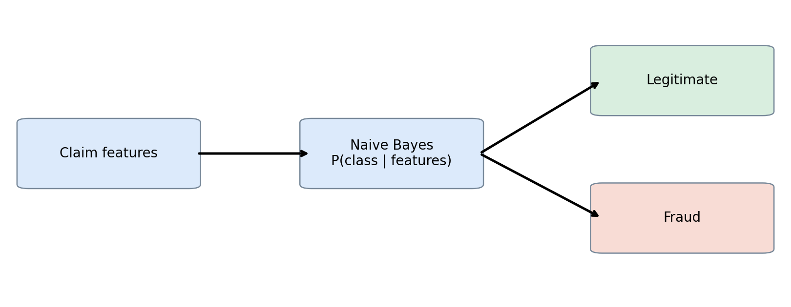
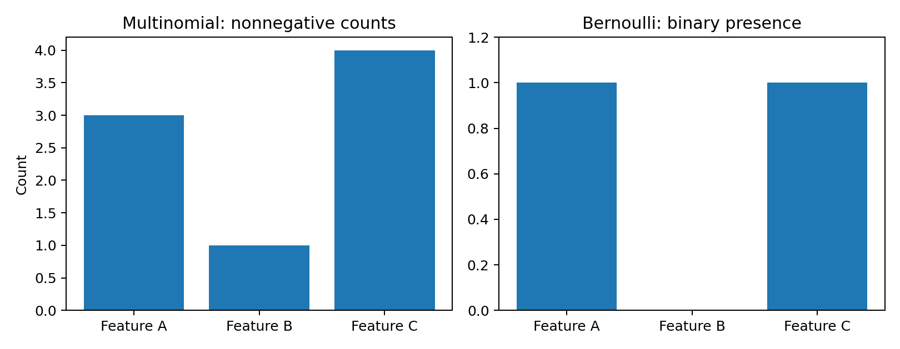
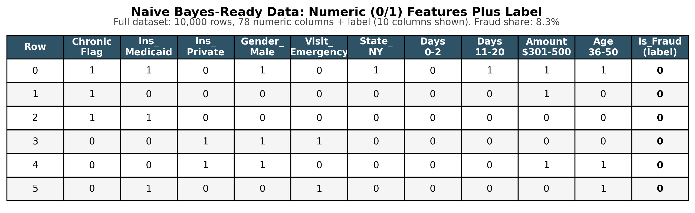
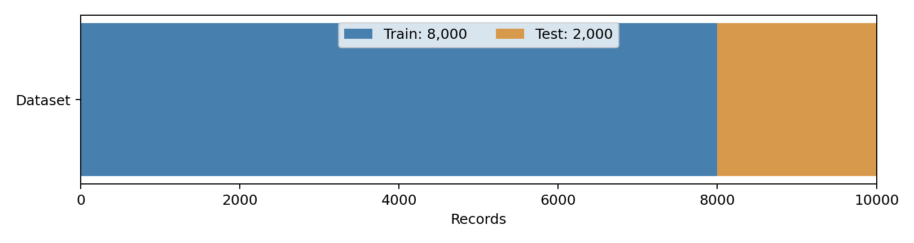
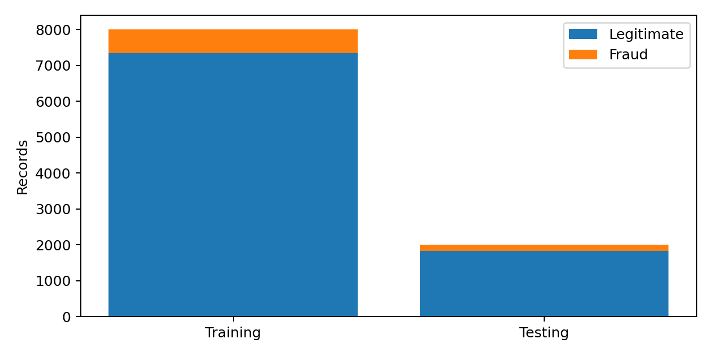
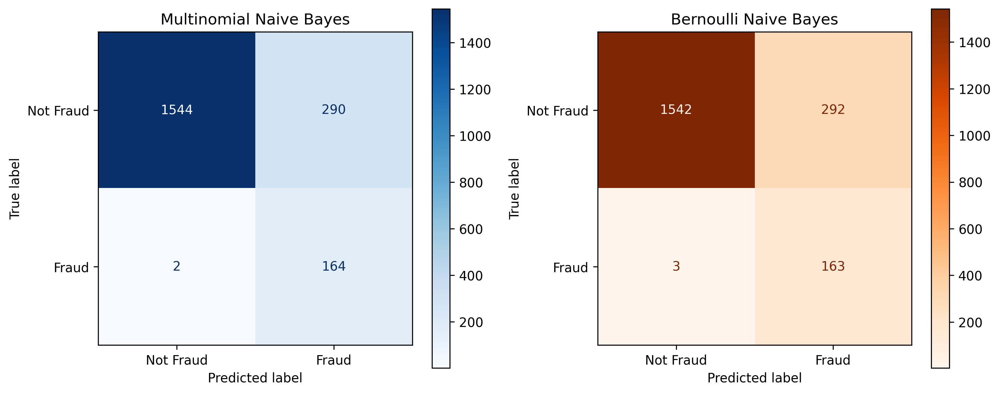
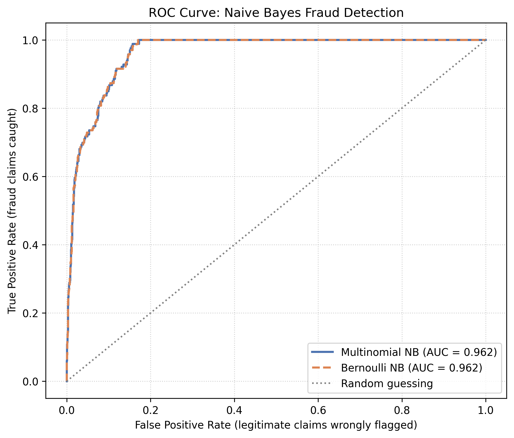

NaiveBayes
Naive Bayes
Overview
Naive Bayes is a supervised machine learning algorithm based on Bayes' theorem, used primarily for classification, where the goal is to assign an observation to one of several predefined categories. The algorithm estimates the probability that an observation belongs to a particular class given its observed predictor variables. It is called "naive" because it assumes the predictors are conditionally independent given the class, an assumption that is rarely true in practice but that makes the method fast, simple, and surprisingly effective in areas such as text classification, spam detection, medical diagnosis, and fraud detection.
P(C | X) = [P(X | C) × P(C)] / P(X)
In this formula, P(C | X) is the posterior probability of class C given the observed features X, P(C) is the prior probability of the class, P(X | C) is the likelihood, and P(X) is the probability of the observed features. The model picks the class with the highest posterior probability.

Two variants were used in this project. Multinomial Naive Bayes is typically applied to nonnegative count data, such as word frequencies in document classification, and models how often each feature occurs within each class. Bernoulli Naive Bayes is designed for binary features that record only the presence or absence of a characteristic, with every feature taking a value of zero or one. Because the prepared claims data consists of binary indicator columns, both models can be fit to it, although binary indicators are not a perfect match for the multinomial count model, so comparing the two is a useful check.

The target variable in this analysis is Is_Fraud, where 0 is a legitimate claim and 1 is a fraudulent claim. Standard Multinomial and Bernoulli Naive Bayes are classification methods, so they do not directly estimate claim frequency, continuous claim severity, or risk-based premiums. Although this project's broader focus is frequency, severity, and pricing, fraud detection is examined here as a supplementary insurance risk classification problem.
Data Prep
Unlike clustering and PCA, Naive Bayes is a supervised method, so it requires labeled data. The analysis uses the health insurance claims dataset of 10,000 observations and 23 variables, with Is_Fraud supplying the known class labels. The classes are imbalanced: 9,171 claims (91.71%) are legitimate and 829 (8.29%) are fraudulent.
Link to the labeled sample data (CSV): nb_sample_data.csv

Fourteen predictors were selected: Claim_Amount, Patient_Age, No_of_Claims_Provider, Service_Claim_days, Length_of_Stay, Prior_Visits_12m, Chronic_Condition_Flag, Insurance_Type, Patient_Gender, Provider_Specialty, Visit_Type, State, Diagnosis_Code, and Procedure_Code. The target Is_Fraud was excluded from the predictor matrix so the model never sees the outcome it is trying to predict.
Missing numeric values were filled with training-set medians, and missing categorical values were assigned an "Unknown" category. Selected numeric variables were grouped into predefined intervals, and categorical variables were one-hot encoded, producing 78 nonnegative numeric features. The data was split 80/20 into training and testing sets using Scikit-learn's train_test_split with random_state=42, with stratified sampling to keep the fraud proportion about the same in both subsets. The test features were aligned to the training columns so both sets have identical predictors.
| Dataset | Observations | Original Features | Encoded Features |
|---|---|---|---|
| Training | 8,000 | 14 | 78 |
| Testing | 2,000 | 14 | 78 |

The two sets are disjoint, meaning no row appears in both, and the Python program confirmed that the number of shared row indices was zero. This matters because evaluating a model on rows it was trained on would produce misleadingly optimistic performance estimates.

Results
Both classifiers were evaluated on the same testing set of 2,000 claims, made up of 1,834 legitimate and 166 fraudulent claims. The two models performed almost identically, with Multinomial Naive Bayes slightly ahead on accuracy and fraud recall.
| Metric | Multinomial NB | Bernoulli NB |
|---|---|---|
| Accuracy | 85.40% | 85.25% |
| ROC-AUC | 0.962 | 0.962 |
| Fraud Precision | 36.12% | 35.82% |
| Fraud Recall | 98.80% | 98.19% |
| False Positives | 290 | 292 |
| False Negatives | 2 | 3 |

Both models achieved very high fraud recall, meaning nearly every fraudulent claim was caught, but their fraud precision was low, meaning many of the claims they flagged were actually legitimate.

An AUC of 0.962 indicates strong discrimination between the two classes, but it does not remove classification errors, as the confusion matrices show. Both models were trained with fit_prior=False, which assigns equal prior probabilities to the two classes instead of using their observed frequencies. This setting likely contributes to the high recall and the large number of false positives, and because fraud is only 8.29% of the data, accuracy alone is not a sufficient measure of performance.
The Multinomial model was also examined to see which feature values are most associated with each class. Positive log differences indicate a stronger relative association with fraud, and negative values indicate a stronger association with legitimate claims.
| Feature | Log Difference |
|---|---|
| Service_Claim_days ≤ 2 | 2.54 |
| Claim_Amount > 1500 | 1.90 |
| Service_Claim_days: 2–4 | 1.39 |
| Service_Claim_days: 4–6 | 1.37 |
| No_of_Claims_Provider > 100 | 1.13 |
| Claim_Amount: 1000–1500 | 1.09 |
| Claim_Amount: 700–1000 | 0.51 |
| Diagnosis_Code: I25.10 | 0.25 |
| Feature | Log Difference |
|---|---|
| Service_Claim_days: 10–20 | -5.48 |
| Service_Claim_days: 20–30 | -5.37 |
| Service_Claim_days: 6–10 | -4.57 |
| Claim_Amount ≤ 300 | -1.45 |
| Claim_Amount: 300–500 | -0.62 |
| Diagnosis_Code: F41.9 | -0.31 |
| Provider_Specialty: Neurology | -0.30 |
| No_of_Claims_Provider: 55–65 | -0.23 |
Conclusions
The Naive Bayes analysis shows that supervised classification can separate potentially fraudulent claims from legitimate ones using historical claim characteristics. Both models reached an ROC-AUC of 0.962, indicating strong discrimination. Multinomial Naive Bayes was marginally better, with 85.40% accuracy versus 85.25% for Bernoulli, and it identified 164 of the 166 fraudulent claims compared with 163 for Bernoulli. The feature associations point the same way in both views of the data: shorter service-to-claim intervals, larger claim amounts, and higher provider claim counts were relatively more associated with fraud.
Just as important to report honestly, both models flagged roughly 290 legitimate claims as fraudulent, which produced fraud precision of only about 36% despite recall near 99%. In practice, that means Naive Bayes is better suited as an initial screening step for claims that warrant further investigation than as a final decision tool, and additional validation, threshold selection, and probability calibration would be needed before any operational use.
In terms of this project's central theme, fraud classification is related to but distinct from claim frequency and severity. These results do not directly estimate claim counts, claim amounts, or premiums, so Naive Bayes is retained as a supplementary analysis, and the regression-based methods later in this project are the more appropriate tools for modeling severity and frequency.